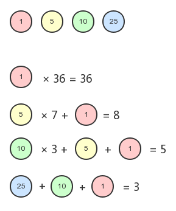

动态规划（Dynamic Programming，DP）是一种将复杂问题分解成更小的子问题来解决的优化算法。下面有一些用动态规划来解决实际问题的算法：
给定一组硬币的面额，以及要找零的钱数，计算出符合找零钱数的最少硬币数量。例如，美国硬币面额有1、5、10、25这四种面额，如果要找36美分的零钱，则得出的最少硬币数应该是1个25美分、1个10美分和1个1美分共三个硬币。这个算法要解决的就是诸如此类的问题。我们来看看如何用动态规划的方式来解决。
对于每一种面额，我们都分别计算所需要的硬币数量。具体算法如下：
对应的示意图如下：

方案4的硬币总数最少，因此为最优方案。
具体的代码实现如下：
function minCoinChange(coins, amount) {
let result = null;
if (!amount) return result;
const makeChange = (index, value, min) => {
let coin = coins[index];
let newAmount = Math.floor(value / coin);
if (newAmount) min[coin] = newAmount;
if (value % coin !== 0) {
makeChange(--index, value - coin * newAmount, min);
}
};
const arr = [];
for (let i = 0; i < coins.length; i++) {
const cache = {};
makeChange(i, amount, cache);
arr.push(cache);
}
console.log(arr);
let newMin = 0;
arr.forEach(item => {
let min = 0;
for (let v in item) min += item[v];
if (!newMin || min < newMin) {
newMin = min;
result = item;
}
});
return result;
}函数minCoinChange()接收一组硬币的面额，以及要找零的钱数。我们将上面例子中的值传入：
const result = minCoinChange2([1, 5, 10, 25], 36);
console.log(result);得到如下结果：
[
{ '1': 36 },
{ '1': 1, '5': 7 },
{ '1': 1, '5': 1, '10': 3 },
{ '1': 1, '10': 1, '25': 1 }
]
{ '1': 1, '10': 1, '25': 1 }上面的数组是我们在代码中打印出来的arr的值，用来展示四种不同面额的硬币作为找零硬币时，实际所需要的硬币种类和数量。最终，我们会计算arr数组中硬币总数最少的那个方案，作为minCoinChange()函数的输出。
当然在实际应用中，我们可以把硬币抽象成任何你需要的数字，这个算法能给出你满足结果的最小组合。
背包问题是一个组合优化问题，它被描述为：给定一个具有固定容量的背包capacity，以及一组具有价值（value）和重量（weight）的物品，找出一个最优方案，使得装入背包的物品的总重量不超过capacity，且总价值最大。
假设我们有以下物品，且背包的总容量为5：
| 物品# | 重量 | 价值 |
| 1 | 2 | 3 |
| 2 | 3 | 4 |
| 3 | 4 | 5 |
我们用矩阵来解决这个问题。首先，我们把物品和背包的容量组成如下矩阵：
| 物品(i)/重量(w) | 0 | 1 | 2 | 3 | 4 | 5 |
| 0 | 0 | 0 | 0 | 0 | 0 | 0 |
| 1 (w=2, v=3) | 0 | 0 |
a: 3+[0][2-2]=3+0 b: [0][2]=0 max(3+0,0)=3 |
a: 3+[0][3-2]=3+0 b: [0][3]=0 max(3+0,0)=3 |
a: 3+[0][4-3]=3+0 b: [0][4]=0 max(3+0,0)=3 |
a: 3+[0][5-3]=3+0 b: [0][5]=0 max(3+0,0)=3 |
| 2 (w=3, v=4) | 0 | 0 | 3 |
a: 4+[1][3-3]=4+0 b: [1][3]=3 max(4+0,3)=4 |
a: 4+[1][4-3]=4+0 b: [1][4]=3 max(4+0,3)=4 |
a: 4+[1][5-3]=4+3 b: [1][5]=3 max(4+3,3)=7 |
| 3 (w=4, v=5) | 0 | 0 | 3 | 4 |
a: 5+[2][4-4]=5+0 b: [2][4]=4 max(5+0,4)=5 |
a: 5+[2][5-4]=5+0 b: [2][5]=7 max(5+0,7)=7 |
为了便于理解，我们将矩阵kS的第一列和第一行忽略（因为它们表示的是容量0和第0个物品）。然后，按照要求往矩阵的格子里填数。如果当前的格子能放下对应的物品，存在以下两种情况：
在上面的表格中，
如果当前物品不能放入背包，则忽略它，用前一个值代替。我们可以按照上面描述的过程把剩余的格子都填满，这样表格中最后一个单元格里的值就是最优方案。
下面是具体的实现代码：
function knapSack(capacity, weights, values, n) {
const kS = [];
// 将ks初始化为一个空的矩阵
for (let i = 0; i <= n; i++) {
kS[i] = [];
}
for (let i = 0; i <= n; i++) {
for (let w = 0; w <= capacity; w++) {
// 忽略矩阵的第1列和第1行
if (i === 0 || w === 0) {
kS[i][w] = 0;
}
else if (weights[i - 1] <= w) {
const a = values[i - 1] + kS[i - 1][w - weights[i - 1]];
const b = kS[i - 1][w];
kS[i][w] = Math.max(a, b);
}
else {
kS[i][w] = kS[i - 1][w];
}
}
}
console.log(kS);
}对于const a，其价值分为两部分，第一部分就是它自己的价值（values[i - 1]），第二部分是用背包剩余的重量（w - weights[i - 1]）装进前一个物品（kS[i - 1]）。对于const b，就是找前一个能放入这个重量的物品（kS[i - 1][w]）。然后取这两种情况下的最大值。
测试一下knapSack()函数，
const capacity = 5;
const weights = [2, 3, 4];
const values = [3, 4, 5];
knapSack(capacity, weights, values, weights.length);下面是矩阵kS的输出结果：
[
[ 0, 0, 0, 0, 0, 0 ],
[ 0, 0, 3, 3, 3, 3 ],
[ 0, 0, 3, 4, 4, 7 ],
[ 0, 0, 3, 4, 5, 7 ]
]找出两个字符串序列的最长子序列的长度。所谓最长子序列，是指两个字符串序列中以相同顺序出现，但不要求连续的字符串序列。例如下面两个字符串：
字符串1：acbaed
字符串2：abcadf
则LCS为acad。
和背包问题的思路类似，我们用下面的表格来描述整个过程：
| a | b | c | a | d | f | ||
| 0 | 0 | 0 | 0 | 0 | 0 | 0 | |
| a | 0 | 1 | 1 | 1 | 1 | 1 | 1 |
| c | 0 | 1 | 1 | 2 | 2 | 2 | 2 |
| b | 0 | 1 | 2 | 2 | 2 | 2 | 2 |
| a | 0 | 1 | 2 | 2 | 3 | 3 | 3 |
| e | 0 | 1 | 2 | 2 | 3 | 3 | 3 |
| d | 0 | 1 | 2 | 2 | 3 | 4 | 4 |
矩阵的第一行和第一列都被设置为0，剩余的部分，遵循下面两种情况：
下面是具体的实现代码：
function lcs(wordX, wordY) {
const m = wordX.length;
const n = wordY.length;
const l = [];
for (let i = 0; i <= m; i++) {
l[i] = [];
for (let j = 0; j <= n; j++) {
l[i][j] = 0;
}
}
for (let i = 0; i <= m; i++) {
for (let j = 0; j <= n; j++) {
if (i === 0 || j === 0) {
l[i][j] = 0;
} else if (wordX[i - 1] === wordY[j - 1]) {
l[i][j] = l[i - 1][j - 1] + 1;
} else {
const a = l[i - 1][j];
const b = l[i][j - 1];
l[i][j] = Math.max(a, b);
}
}
}
console.log(l);
console.log(l[m][n]);
}我们将矩阵打印出来，结果如下：
const wordX = ['a', 'c', 'b', 'a', 'e', 'd'];
const wordY = ['a', 'b', 'c', 'a', 'd', 'f'];
lcs(wordX, wordY);[
[ 0, 0, 0, 0, 0, 0, 0 ],
[ 0, 1, 1, 1, 1, 1, 1 ],
[ 0, 1, 1, 2, 2, 2, 2 ],
[ 0, 1, 2, 2, 2, 2, 2 ],
[ 0, 1, 2, 2, 3, 3, 3 ],
[ 0, 1, 2, 2, 3, 3, 3 ],
[ 0, 1, 2, 2, 3, 4, 4 ]
]
4矩阵中最后一个单元格的值为LCS的长度。那如何计算出LCS的具体内容呢？我们可以设计一个相同的solution矩阵，用来做标记，如果wordX[i - 1]和wordY[j - 1]相等，则将solution矩阵中对应的值设置为'diagonal'，即上面表格中背景为灰色的单元格。否则，根据[i][j]和[i - 1][j]是否相等标记为'top'或'left'。然后通过printSolution()方法来找出LCS的内容。修改之后的代码如下：
function printSolution(solution, wordX, m, n) {
let a = m;
let b = n;
let x = solution[a][b];
let answer = '';
while (x !== '0') {
if (solution[a][b] === 'diagonal') {
answer = wordX[a - 1] + answer;
a--;
b--;
} else if (solution[a][b] === 'left') {
b--;
} else if (solution[a][b] === 'top') {
a--;
}
x = solution[a][b];
}
return answer;
}
function lcs(wordX, wordY) {
const m = wordX.length;
const n = wordY.length;
const l = [];
const solution = [];
for (let i = 0; i <= m; i++) {
l[i] = [];
solution[i] = [];
for (let j = 0; j <= n; j++) {
l[i][j] = 0;
solution[i][j] = '0';
}
}
for (let i = 0; i <= m; i++) {
for (let j = 0; j <= n; j++) {
if (i === 0 || j === 0) {
l[i][j] = 0;
} else if (wordX[i - 1] === wordY[j - 1]) {
l[i][j] = l[i - 1][j - 1] + 1;
solution[i][j] = 'diagonal';
} else {
const a = l[i - 1][j];
const b = l[i][j - 1];
l[i][j] = Math.max(a, b);
solution[i][j] = l[i][j] === l[i - 1][j] ? 'top' : 'left';
}
}
}
return printSolution(solution, wordX, m, n);
}测试结果：
const wordX = ['a', 'c', 'b', 'a', 'e', 'd'];
const wordY = ['a', 'b', 'c', 'a', 'd', 'f'];
console.log(lcs(wordX, wordY)); // acad贪心算法遵循一种近似解决问题的技术，期盼通过每个阶段的局部最优选择，从而达到全局的最优。它不像动态规划算法那样计算更大的格局。
我们来看看如何用贪心算法解决前面提到过的最少硬币找零问题。
function minCoinChange(coins, amount) {
const change = [];
let total = 0;
for (let i = coins.length - 1; i >= 0; i--) {
const coin = coins[i];
while (total + coin <= amount) {
change.push(coin);
total += coin;
}
}
return change;
}
const result = minCoinChange([1, 5, 10, 25], 36);
console.log(result); // [ 25, 10, 1 ]前提是coins数组已经按从小到大排好序了，贪心算法从最大值开始尝试，如果该值不满足条件（要找零的钱数），则继续向下找，直到找到满足条件的所有值。以上算法并不能满足所有情况下找出最优方案，例如下面这种情况：
const result = minCoinChange([1, 2, 5, 9, 10], 18);
console.log(result); // [ 10, 5, 2, 1 ]给出的结果[10, 5, 2, 1]并不是最优方案，最优方案应该是[9, 9]。
与动态规划相比，贪心算法更简单、效率更高。但是其结果并不总是最理想的。但是综合看来，它相对执行时间来说，输出一个可以接受的结果。
| 物品# | 重量 | 价值 |
| 1 | 2 | 3 |
| 2 | 3 | 4 |
| 3 | 4 | 5 |
在动态规划的例子里，假定背包的容量为5，最佳方案是往背包里装入物品1和物品2，总价值为7。在贪心算法中，我们需要考虑分数的情况，假定背包的容量为6，装入物品1和物品2之后，剩余容量为1，可以装入1/4的物品3，总价值为3+4+0.25×5=8.25。我们来看看具体的实现代码：
function knapSack(capacity, weights, values) {
const n = values.length;
let load = 0;
let val = 0;
for (let i = 0; i < n && load < capacity; i++) {
if (weights[i] <= capacity - load) {
val += values[i];
load += weights[i];
console.log(`物品${i + 1}，重量：${weights[i]}，价值：${values[i]}`);
} else {
const r = (capacity - load) / weights[i];
val += r * values[i];
load += weights[i];
console.log(`物品${i + 1}的${r}，重量：${r * weights[i]}，价值：${val}`);
}
}
return val;
}从第一个物品开始遍历，如果总重量小于背包的容量，则继续迭代，装入物品。如果物品可以完整地装入背包，则将其价值和重量分别计入到变量val和load中，同时打印装入物品的信息。如果物品不能完整地装入背包，计算能够装入的比例r，然后将这个比例所对应的价值和重量分别计入到变量val和load中，同时打印物品的信息。最终输出总的价值val。下面是测试结果：
const capacity = 6;
const weights = [2, 3, 4];
const values = [3, 4, 5];
console.log(knapSack(capacity, weights, values));物品1，重量：2，价值：3
物品2，重量：3，价值：4
物品3的0.25，重量：1，价值：8.25
8.25在动态规划算法中，如果将背包的容量也设定为6，计算结果则为8。
最后我们再来看看如何用贪心算法解决LCS的问题。下面的代码返回了两个给定数组中的LCS的长度：
function lcs(wordX, wordY, m = wordX.length, n = wordY.length) {
if (m === 0 || n === 0) {
return 0;
}
if (wordX[m - 1] === wordY[n - 1]) {
return 1 + lcs(wordX, wordY, m - 1, n - 1);
}
const a = lcs(wordX, wordY, m, n - 1);
const b = lcs(wordX, wordY, m - 1, n);
return a > b ? a : b;
}
const wordX = ['a', 'c', 'b', 'a', 'e', 'd'];
const wordY = ['a', 'b', 'c', 'a', 'd', 'f'];
console.log(lcs(wordX, wordY)); // 4